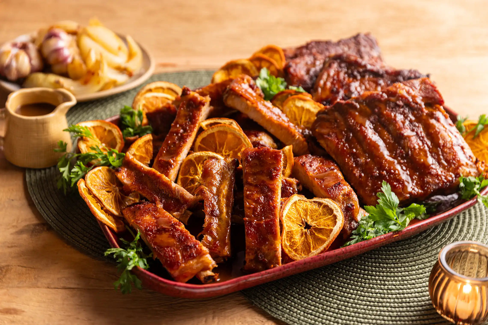

Ingredientes
- 1 kg de costelinhas de porco
- 3 dentes de alho amassados
- Suco de 1 limão
- 1 colher de sopa de páprica doce
- Sal e pimenta-do-reino a gosto
- 1/4 de xícara de azeite
- 1/2 xícara de molho barbecue (opcional)
Modo de Preparo
- Tempere as costelinhas com o alho, suco de limão, páprica, sal, pimenta e azeite. Deixe marinar por pelo menos 2 horas ou de um dia para o outro.
- Pré-aqueça o forno a 180°C.
- Coloque as costelinhas em uma assadeira, cubra com papel-alumínio e leve ao forno por 1 hora.
- Retire o papel-alumínio, pincele com o molho barbecue, se desejar, e aumente a temperatura para 200°C.
- Asse por mais 20-30 minutos, até que fiquem douradas e caramelizadas.
- Retire do forno, sirva quente e aproveite!